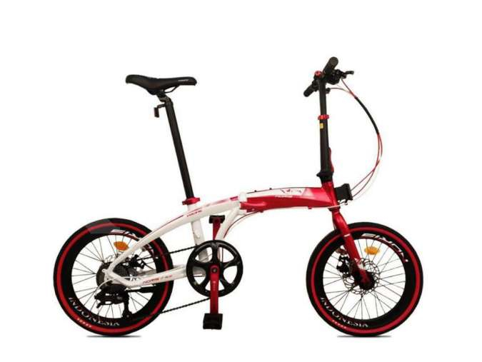
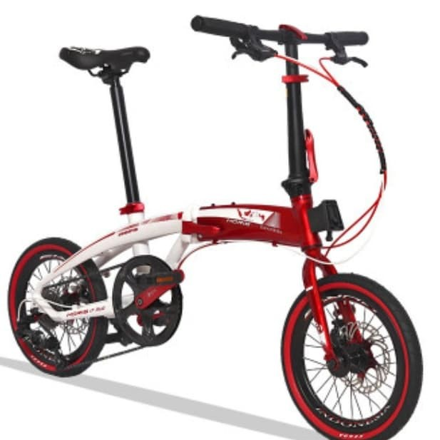
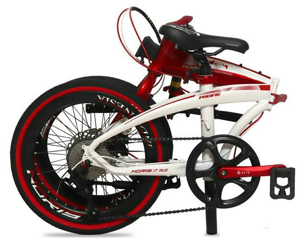

Pacific Merah Putih



eskripsi Sepeda Lipat PAcific Noris 2.0 Limited Edition Indonesia Merah Putih
Deskripsi READY STOCK Sepeda Lipat Pacific Bike Noris
Indonesia Merah Putih
SEPEDA LIPAT LIMITED TERBATAS
HARI KEMERDEKAAN 17 AGUSTUS
Model NORIS INDONESIA
Color Red – White
Frame 20″ Alloy 6061 Folding Frame
Fork 20″ Hi-Ten Steel Fork
Shifter Shimano Altus SL-M310 8 Speed
Rear Derailleur Black Box BX-8
F/R Brakes Pacific Mechanical Discbrake
Freewheel 13-32T
Pedal Folding Pedal
Crankset Pacific Alloy 52T – 170mm
Bottom Bracket Cartridge BB Square
Chain C8
Front Hub 32H
Rear Hub 32H
Spokes 14G
Rim Pacific Alloy Double Wall 20″
Tires Kenda K193 20″x1.50
Saddle Pacific Saddle
Stem Alloy
Seatpost Alloy 33.9x560mm
Handlebar Alloy W: 560mm
*Harga belum termasuk ongkir
*Barang belum dirakit, apabila ingin dirakit dalam kota masih bisa (ada biaya tambahan)
*Garansi barang dari pabrik sendiri !!!
* Jangan lupa untuk input warna pilihan anda saat membeli!
* Ketersediaan warna boleh chat dulu, apabila tdk tanya dan ternyata tidak ready kami kirim random
apabila ada pertanyaan mengenai spesifikasi dan detail lainnya, bisa langsung chat ya :)
Dimohon untuk sabar menunggu akan pengiriman, semua order akan kami proses secara berkala. Salam hidup sehat!